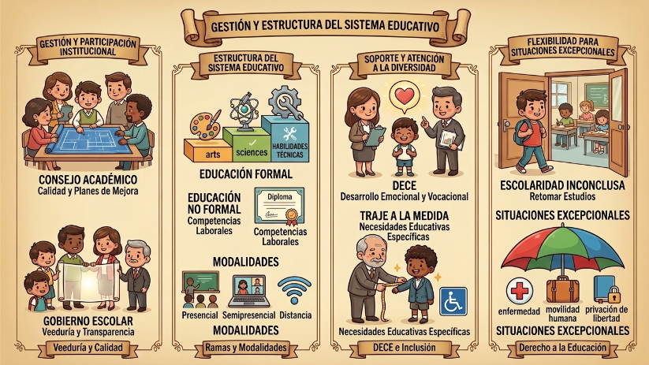

Para entender cómo se mueven las piezas dentro de cada institución, hay dos figuras clave: el Consejo Académico y el Gobierno Escolar. El primero se encarga de que la calidad no sea solo un discurso, diseñando planes de desarrollo para mejorar la enseñanza. Pero el que realmente me parece interesante es el Gobierno Escolar (Art. 45), que es básicamente el espacio donde la comunidad (estudiantes, profes, directivos y padres) hace "veeduría". Es decir, todos vigilan que el Plan Educativo Institucional (PEI) se cumpla y que haya transparencia en la rendición de cuentas.

Niveles y modalidades: ¿Cómo estudiamos?
El sistema tiene dos grandes ramas: la educación formal, que es la de toda la vida (inicial, básica y bachillerato) y nos da un título; y la no formal, que es más flexible, opcional y enfocada en certificados de competencias laborales.
Dentro de la formal, pasamos por tres niveles: el Inicial (para los más peques de 3 a 5 años), la Básica (esos 10 años que son la columna vertebral de nuestra formación) y el Bachillerato. Aquí me llamó la atención que ya no es solo "bachiller", ahora hay varias rutas: en ciencias, técnico, en artes o técnico productivo. Y no olvidemos que podemos estudiar de forma presencial (la clásica asistencia diaria), semipresencial o a distancia (usando internet como herramienta principal).
El apoyo detrás de escena: DECE y casos especiales
Algo fundamental que nos protege es el DECE (Departamento de Consejería Estudiantil). Son los expertos (psicólogos y pedagogos) que cuidan nuestro desarrollo integral. Ellos no solo nos ayudan con la orientación vocacional (lo que nos gusta) y profesional (en qué nos vemos trabajando), sino que son el soporte técnico ante cualquier problema. Además, la ley es bien enfática: todos los centros están obligados a recibir a personas con necesidades educativas específicas y crear los apoyos necesarios.